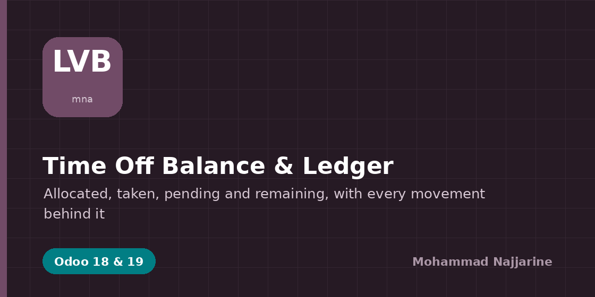
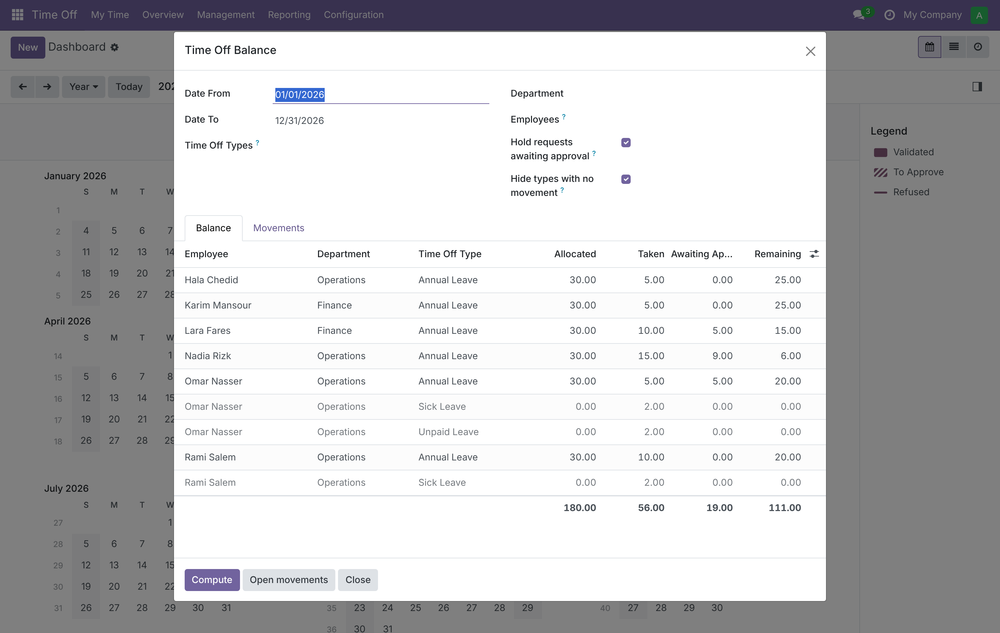
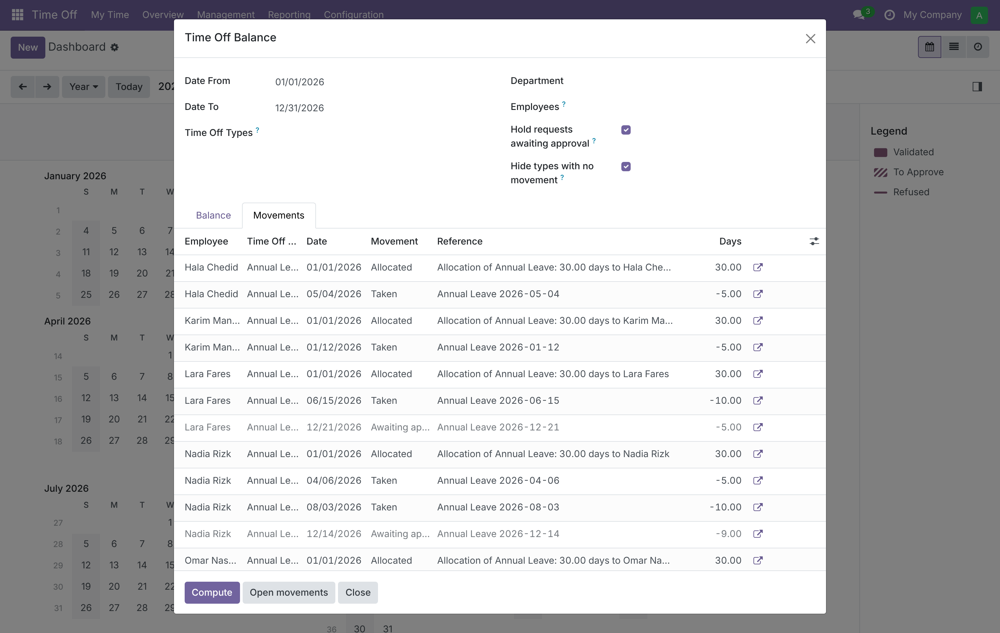

Odoo knows the leave balance. It shows it as a number on a card, and when an employee disputes that number there is no statement to put in front of them. This builds one.
Free and open source under LGPL-3.
One row per employee and per time off type, with the four figures that answer the question.
Every allocation and every request, dated, with a button that opens the record itself.
A type configured in hours is meaningless expressed in days, so both are carried on every line.
Hold them against the balance, which is what somebody planning a trip needs, or count only what is approved.
A type that needs no allocation has no balance to run down, so it is shown as taken, not as minus two days.
A year, a quarter, a notice period. Allocations and requests are read against the dates you give.
Thirty days allocated, what has been taken, what is still awaiting approval, and what is left. Sick and unpaid leave need no allocation, so they show what was taken and claim no balance.

The allocation that put the days in and each request that took them out, signed so the column adds up to the balance.

An allocation still awaiting approval is a plan, not a balance, and contributes nothing until it is approved.
An allocation counts if it has started by the end of the period and has not already ended before it began. An allocation with no end date runs forever, which is how Odoo reads it too. A request counts if any part of it falls inside the period.
It reports. It never edits a request or an allocation.
| Odoo | 18.0 and 19.0, Community or Enterprise |
| Depends on | Time Off only. No Enterprise module required |
| Licence | LGPL-3, free and open source |
Written and maintained by Mohammad Najjarine, Odoo consultant. Questions, bug reports and customisation requests are answered.
Message me on WhatsApp Code and issues on GitHub
Phone and WhatsApp +961 71 835279